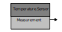
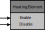

Workflow¶
Let us walk through a simple example to demonstrate how our code crafting tools can be leveraged in bottom-up or top-down software development workflows.
Bottom-Up¶
Message Definition¶
The first step in a bottom-up workflow is to define the data content and format of each message that is passed between software components in the application. This is accomplished by writing suitable data structure declarations in Tydl, our custom type definition language.
import everything: from: Tydl
file defines: members of: Namespace named: HVAC.Temperature
Temperature.Measurement: Data.Record
fields:
Temperature: Data.Float32
Humidity: Data.Float32
Component Interface Definition¶
The next step is to define the messaging interface for each software component in the application. Components have input ports for receiving messages from other components and output ports for sending messages to other components. Each port has a name and an associated data type that defines the message format. Component messaging interfaces are defined using the Smidgen syntax, which builds on Tydl.
HVAC/Temperature/Sensor.cmi¶
import everything: from: Smidgen
import Stateful from: Chimps
file defines: members of: Namespace ...
named: HVAC.Temperature.Sensor
Temperature.Sensor.Interface: Messaging.Interface
extends: Stateful.Interface
ports:
Measurement: Messaging.Port
type: Temperature.Measurement
output:
Period: Component.Property Data.Float64
default: 10
|
 |
HVAC/Heating/Element.cmi¶
import everything: from: Smidgen
import Stateful from: Chimps
file defines: members of: Namespace ...
named: HVAC.Heating.Element
Heating.Element.Interface: Messaging.Interface
extends: Stateful.Interface
ports:
Enable: Messaging.Port input:
Disable: Messaging.Port input:
|
 |
Primitive Component Declaration¶
Stay tuned…
Primitive Component Implementation¶
Stay tuned…